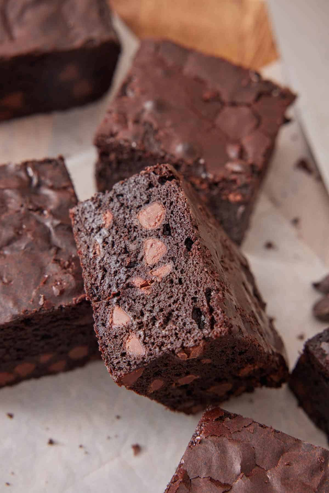

CHOCOLATE BROWNIES
Easy homemade brownies will have you ditching store-bought mixes for good. Loaded with decadent chocolate flavor, these brownies are gooey and thick with crispy edges.
| Prep. time: 10mins | Cook time: 35mins | Servings: 16 cupcakes | Difficulty: Easy |
|
 |
INGREDIENTS LIST
|
INSTRUCTIONS
- Preheat the oven to 350°F. Lightly grease an 8x8-inch baking pan with baking spray and line it with parchment paper.
- In a large microwave-safe bowl, melt the butter in the microwave in 20-second intervals stirring between each one until fully melted, about 2 minutes. Add the sugar and cocoa and whisk vigorously for 30 seconds. (This forms the crackly top!) Whisk in the eggs, vanilla, and salt.
- Add the flour and chocolate chips and mix together with a spatula until just combined. Spread the batter into the prepared pan. (You can sprinkle the top with more chocolate chips, if desired.)
- Bake for about 35 to 40 minutes for super fudgy brownies, or up to 55 minutes for cakey brownies. (Test them by inserting a toothpick into the center. For fudgy brownies, it should have a little smear of batter or several moist crumbs. For cakey brownies, it should only have a few crumbs and be mostly clean.) Let the brownies cool completely in the pan before slicing.
NUTRITION FACTS
| Nutrient | Amount per Serving |
|---|---|
| Calories | 349kcal |
| Carbohydrates | 42g |
| Protein | 4g |
| Saturated Fat | 12g |
| Monounsaturated Fat | 5g |
| Cholestorol | 66mg |
| Sodium | 163mg |
| Fiber | 3g |
| Sugar | 31g |
| Vitamin A | 414IU |
Adapted from Preppy Kitchen